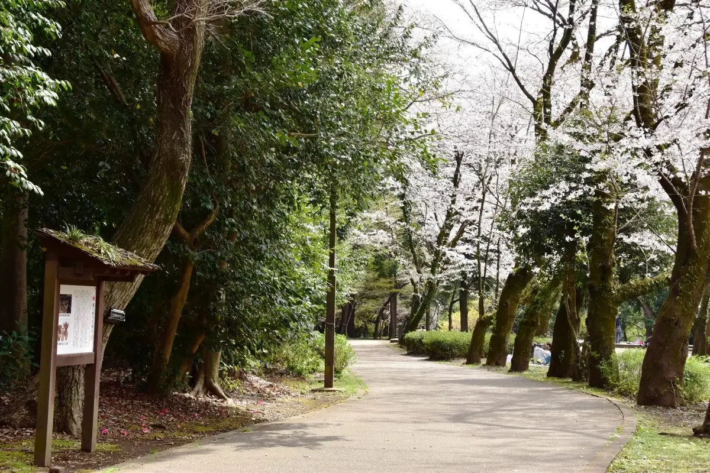
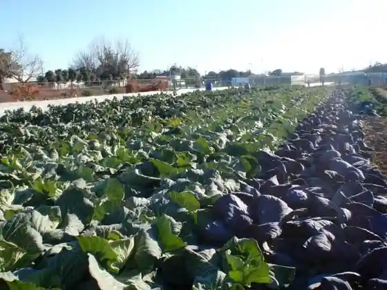
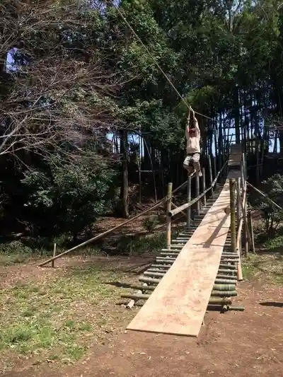
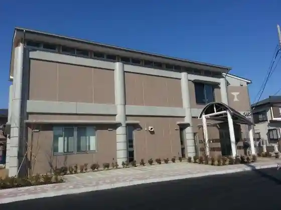
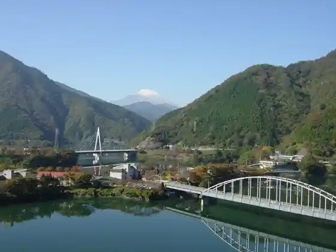

Japan / Kanagawa / Ayase
Ayase, Kanagawa
Ayase · Kanagawa
Ayase
Highlighted on the Kanagawa map.

Sights
Jun Na Mi no Ri Farm
Ayase, Kanagawa · Official / source link

Shiroyama Park
Ayase, Kanagawa · 0467-70-5627 · Official / source link
Doriimupureiuzzu
Ayase, Kanagawa · 090-4530-251 · Official / source link

Kanzaki Iseki Museum
Ayase, Kanagawa · Official / source link

Go Sha Shrine
Ayase, Kanagawa · 0467-77-5310 · Official / source link

Kanigatani Park
Ayase, Kanagawa · 0467-70-5685 · Official / source link
Ayase Yakusho (Rogachi De Tanoshi Merumachi Ayase)
Ayase, Kanagawa · Official / source link
Koza Buta Te Tsukuri Hamu Ayase Main Shop
Ayase, Kanagawa · 0467-76-8611 · Official / source link
Okubo Shoten
Ayase, Kanagawa · 0467-78-0010 · Official / source link
Ayase Rozu Garden
Ayase, Kanagawa · 0467-38-3090 · Official / source link